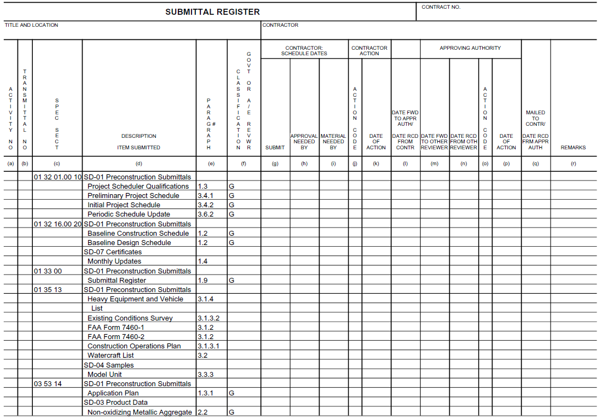

The Submittal Register Report is a comprehensive list of all the materials, products, and items that need to be submitted for review and approval during a construction project. It acts as a tracking mechanism to ensure all items comply with project specifications before installation.
The Submittal Register Report lists each Submittal Description (SD) and Submittal Item (SUB) cited in the Job, as well as the Section and paragraph number locations, along with the Classification Code for the approving authority.
When the Submittal Register is generated, the system:

 This report is contractually mandated. Preparing the project for final submission, it is manually inserted after the 01 33 00 Submittal Procedures Section.
This report is contractually mandated. Preparing the project for final submission, it is manually inserted after the 01 33 00 Submittal Procedures Section.
 Unlike the other SpecsIntact reports, the Submittal Register won't appear directly in the Processed Files folder within the SpecsIntact Explorer. However, it is automatically generated and included when you perform the Process & Print function to create a physical copy. For digital outputs, if you publish to PDF, the Submittal Register will then be available for viewing within the PDF Files folder in the SpecsIntact Explorer.
Unlike the other SpecsIntact reports, the Submittal Register won't appear directly in the Processed Files folder within the SpecsIntact Explorer. However, it is automatically generated and included when you perform the Process & Print function to create a physical copy. For digital outputs, if you publish to PDF, the Submittal Register will then be available for viewing within the PDF Files folder in the SpecsIntact Explorer.
 To learn more about Submittals, refer to the Submittal Formatting Requirements and the Submittal Wizard Overview topics.
To learn more about Submittals, refer to the Submittal Formatting Requirements and the Submittal Wizard Overview topics.
 To learn how to export the Submittal Register to a spreadsheet or web file, refer to the Export Submittal Register topic.
To learn how to export the Submittal Register to a spreadsheet or web file, refer to the Export Submittal Register topic.
| Problem | Cause |
| Column (f): The Classification Government or A/E Reviewer has a double 'G'. | The Submittal Item is listed twice in the Submittal Article under the same Submittal Description. |
| Column (e): The Paragraph is blank. | The Submittal Item is only found in the Submittal Article and not used in the Section's text, outside the Submittal Article. |
| The Reviewer Code: Appears in Column (d) instead of Column (f). | The Classification Code (G, S, etc.) must precede the Reviewer Code (AE, DO, AO, RO, or PO) |
| The Classification Code 'FIO' appears in Column (d) instead of Column (f). | The Classification Code 'FIO' is no longer recognized on the UFGS Submittal Register and should not be used in the Submittal Article. When the Submittal Register data is uploaded into RMS, blank code translates to 'FIO' automatically. |
Users are encouraged to visit the SpecsIntact Website's Support & Help Center for access to all of our User Tools, including Web-Based Help (containing Troubleshooting, Frequently Asked Questions (FAQs), Technical Notes, and Known Problems), eLearning Modules (video tutorials), and printable Guides.
| CONTACT US: | ||
| 256.895.5505 | ||
| SpecsIntact@usace.army.mil | ||
| SpecsIntact.wbdg.org | ||